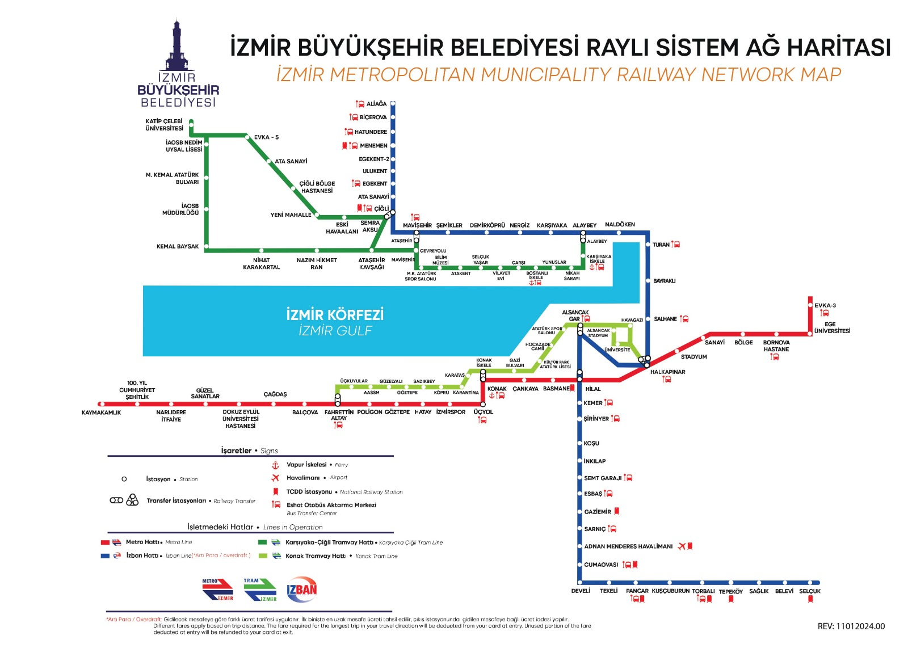

İzmir Metro Hattı
İzmir Metro, şehrin en önemli raylı ulaşım hatlarından biridir ve 2000 yılında hizmete girmiştir. Bu hat, şehir içindeki yoğun ulaşım taleplerini karşılamak için sürekli genişlemektedir.

Hat Bilgileri
| Hat Uzunluğu | 20 km |
|---|---|
| İşletmeye Açılış Yılı | 2000 |
| İstasyon Sayısı | 17 |
| Günlük Yolcu Sayısı | 200,000 |
| Hat Üzerindeki Bölgeler | Narlıdere, Balçova, Karabağlar, Konak ve Bornova |